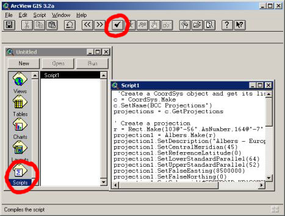

Вы получили от кого-то удобный скрипт, но не знаете что с ним делать...
Подключить скрипт очень просто:
1. В окне менеджера проекта (окно которое появляется после создания нового проекта) дважды щелкнуть на поле "Scripts" или выбрать поле "Script" и щелкнуть на кнопке "New"
2. Появится новое пустое окно скрипта под названием Script1, если вас устраивает такое название то ничего не предпринимайте, если же решите дать ему более осмысленное название, то закройте окно "Script1" и при активном окне менеджера проекта выберите:
Project\Rename "Script1", или нажмите Ctrl+R
В появившемся окне наберите новое имя для скрипта, запомните его так как вам в дальнейшем придется его вносить в настройки новой кнопки или элемента диалогового окна.
3. Откройте окно скрипта двойным щелчком. Если у вас есть готовый скрипт вы можете его подгрузить через
Script\Load Text File..., файл скрипта представляет собой простой текстовый файл с расширением AVE или TXT
Вы также можете набрать в окне свой скрипт или изменить загруженный и т.д. Также можно редактировать системный скрипт отвечающий за выполнение одной из операций Arcview, для этого надо загрузить его
Script\Load System Script...
4. Скомпилируйте скрипт
Script\Compile
Скрипт можно считать подключенным, после этого его нужно выполнить.
5. Запустить скрипт
Script\Run, или нажав F5
Так же можно назначить скрипт кнопке на панели инструментов или кнопок. Как создать кнопку и подключить к ней скрипт прочитать здесь.
Дата создания: 05.03.2003
Автор(ы): Максим Дубинин